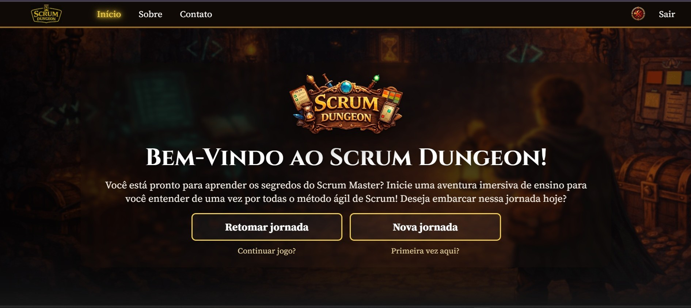

Projetos Acadêmicos
1DSM – 1º Sem. 2026
Projeto: Scrum Dungeon - Grupo OctopusCode
Nesse projeto, fomos desafiados a colocar em prática os conhecimento de HTML, CSS, JavaScript, Node.js, SQL. O objetivo do projeto era criar um portal de ensino sobre Scrum, com questionários e avaliação. O grupo OctopusCode desenvolveu uma plataforma gameficada baseada em jogos de RPG e Rogue-like, com o objetivo de ensinar Scrum de forma divertida e interativa.
Esse projeto foi considerado o primeiro colocado da turma.
Aqui atuei em várias frentes, desde o código inicial de login/logout com o banco de dados. FrontEnd da Tela de Certificado. E a concepção completa do capítulo 3 do projeto, pensando desde o texto, interação com o usuário, imagens, animações e conexão com a página de questionário.
Tecnologias utilizadas:
- HTML
- CSS
- Javascript
- Node.js
Para conhecer o repositório do projeto click no link
Para ver o projeto em funcionamento, clique na imagem abaixo:
